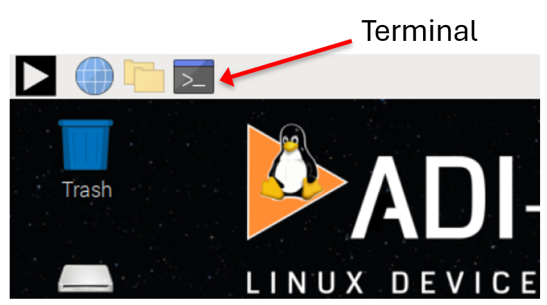
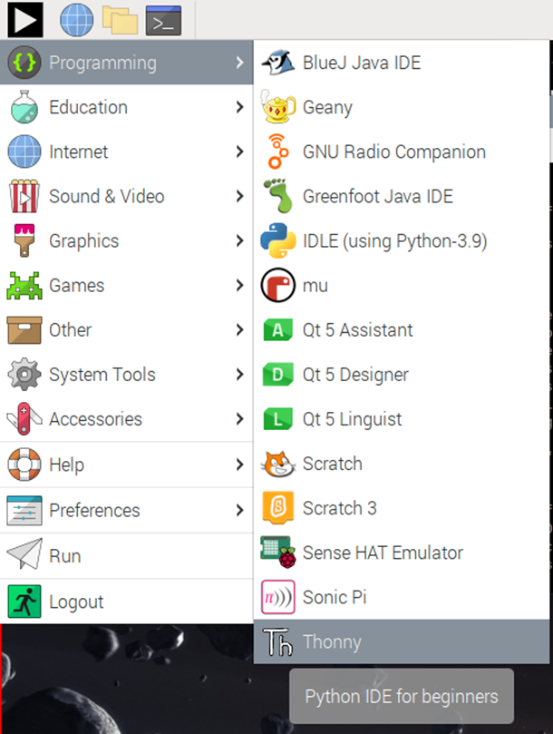
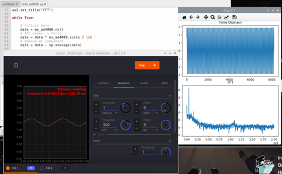
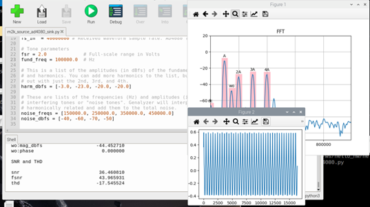
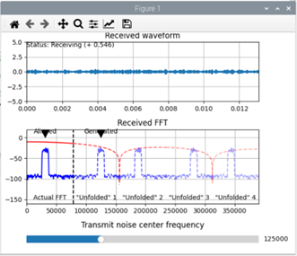
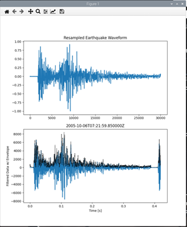

Software Infrastructure for designing with ADCs, DACs, and Sensors
Note
This is a work in progress.
Introduction
Analog Devices manufactures a dizzying array of products from simple, 2-terminal shunt voltage references to some of the most complicated communication and instrumentation devices in existence. ADCs, DACs, and sensors comprise a large subset of this space, and devices from the slow, jellybean LM75 temperature sensor to the Apollo MXfE share many of the same frameworks, programming interfaces, design and development tools.
This tutorial will use a part “somewhere in the middle” in terms of complexity, the AD4080 40 Msps Oversampling SAR ADC, as a launchpad for learning about the powerful tools available for supporting such a broad range of devices. This part’s versatility is ideal for illustrating several key software and hardware concepts:
Microcontroller / FPGA decision factors
Linux / no-OS / Zephyr support
Language support
Hardware and Software Enablement, System Prototyping
Signal chain architecture
This tutorial will cover each of these in summary, accompanied by hands-on exercises with hardware. We’ll test drive key software utilities, run example programs, take some basic performance measurements, and prototype a simple seismic application example for strategic and key (S&K) customer Fred in the Shed Instruments. Finally, we’ll show how concepts can be applied to other data converter products – PLLs, DDS, IMUs, and more.
The tutorial can be most easily run on a Raspberry Pi 4 or 400, but we’ll leave you with instructions on how to install everything on your ADI laptop, your co-worker’s Mac, and your other co-worker’s Linux box. You will walk away knowing how to bring up this portable, economical setup in customer lobbies, labs, and conference rooms. It also serves as a testing ground for elements that can be used in a future mixed-mode signal chain tutorial.
You may recognize some of the material; this tutorial builds upon two previous ones:
Tools for Low-Speed Mixed Signal System Design
where we connected an AD5592r to a Raspberry Pi and built a transistor curve tracer, and
Tools for Precision Wideband Mixed Signal System Design
where we used an ADALM2000 as part of a colorimeter proof of concept, then demonstrated how easy it was to replace the ADALM2000 with an AD4630-24 ADC.
Slide Deck and Video
This tutorial is also designed to be presented as a live, hands-on workshop; a slide deck is provided here:
A complete video run-through will also be provided, either as a companion to following the tutorial yourself, or to practice before presenting as a hands-on workshop. This video is a placeholder for the time being, but many of the concepts apply directly to this workshop:
ToDo
To Do: Re-shoot video after experiment-specific module released.
Materials
Raspberry Pi 400 (or 4)
32 GB or larger, Class 10 or greater SD card
- EVAL-AD4080-ARDZ eval board (Not on Analog.com yet, see disty links below.)
Tensility 16-00078 / DigiKey 839-1671-ND 12 V adapter
ST Nucleo-H563ZI
- ADALM2000 Multi-function USB instrument
ADALM2000 will be referred to as “m2k”
- Either 1k series resistors, or 2k/3k attenuators between the M2k and AD4080
Hardware setup
Jump the ST Nucleo’s SB70 with a blob of solder. This jumper is near pin 1 of the main processor chip.
Update the ST Nucleo-H563ZI management firmware using the utility at ST-LINK boards firmware upgrade
Program the ST Nucleo-H563ZI board with the AD4080 tinyiiod server binary file.
Note
ToDo: Replace with link to controlled file when released. In the meantime, use this file.
Download
MD5 checksum: 637690bad1d489a5429f8bc518336aaf
(On Windows: certutil -hashfile .\ad4080_stm32_nucleo_h563.bin MD5)
Mount the EVAL-AD4080-ARDZ to the Nucleo-H563ZI board. Pin connections are unambiguous; it will only plug in in one location. Connect the m2k’s W1 and W2 waveform generator outputs to the EVAL-AD4080-ARDZ inputs with the 1k series resistors or 2k/3k attenuator, and optionally connect the m2k’s 1+ and 1- to the ADC inputs as shown in Figure 1.
{kind=link}
For reference, the connector pinouts are shown in Figure 2.
{kind=link}
W1 - IN- on adapter (mislabeled)
W2 - IN+ on adapter (mislabeled)
1+ to P2, pin 1
1- to P2, pin 7
1-, 2- to m2k GND pins
Connect the ADALM2000 to one of the Raspberry Pi’s USB port, and the Nucleo-H563ZI to another. Power the EVAL-AD4080-ARDZ with the 12 V adapter, and power up the Raspberry Pi
Software Setup
Important
The setup script installs several software packages, it is recommended to use a dedicated SD card for this exercise to avoid conflicts or overwriting anything important.
Write the ADI Kuiper Linux image onto the SD card. Directions and the image download are available at:
In theory the latest Kuiper Linux release should always work, but this tutorial is tested with the 2023_r2 release. All previous releases are archived and available.
Boot up the Raspberry Pi and connect to the internet. Code and setup scripts for this workshop are available at:
Todo
Re-host code and setup scripts, perhaps in the analogdevicesinc/education_tools repo.
Open a termial and run the following commands:
git clone https://github.com/cristina-suteu/ftc24-ws.git
cd ftc24-ws
sudo ./workshopsetup.sh
This will download and install all of the prerequisite software needed for the rest of the exercise.
Exercise 1: Command line
Multiple examples require running Linux commands. For those, open the terminal from the task bar:
{kind=link}
IIO Info
Communication with the various data converter sources and sinks is done through the Industrial I/O (IIO) framework. This framework is used for communicating with devices that are in some sense an ADC or DAC, and is the backbone of many of the tools we will use in this workshop. An important concept in IIO is the “Context”. An IIO context usually refers to a computing device or a device driver that is capable of interfacing with IIO devices. The context is the starting point for all IIO operations, and is used to manage devices, channels, and buffers. The context can be local (on the same device), or remote (on a different device). The IIO context is created by the IIO backend, which is responsible for interfacing with the hardware.
There are three IIO contexts in our setup: - The Raspberry Pi itself, whose backend is local. It has two IIO devices: an internal temperature sensor and a supply voltage monitor - The ST Nucleo-H563ZI,whose backend is serial. It has one IIO device: the AD4080 - The ADALM2000, whose backend is either USB or netowrk. It has several IIO devices: the XADC housekeeping ADCs on the FPGA, the AD9963 ADC/DAC, and custom peripherals (triggering, waveform generation, DMAs) in the FPGA.
Let’s use the iio_info utility to display information about…
…the local: context (raspberry pi cpu_thermal):
iio_infoExpected output:
iio_info version: 0.26 (git tag:a0eca0d2) Libiio version: 0.26 (git tag: a0eca0d) backends: local xml ip usb serial IIO context created with local backend. Backend version: 0.26 (git tag: a0eca0d) Backend description string: Linux kuiper-ioan 6.1.54-v7l+ #1 SMP Fri Sep 20 07:21:36 UTC 2024 armv7l IIO context has 4 attributes: hw_carrier: Raspberry Pi 4 Model B Rev 1.4 dtoverlay: vc4-kms-v3d local,kernel: 6.1.54-v7l+ uri: local: IIO context has 2 devices: hwmon0: cpu_thermal 1 channels found: temp1: (input) 2 channel-specific attributes found: attr 0: crit value: 110000 attr 1: input value: 49173 No trigger on this device hwmon1: rpi_volt 1 channels found: in0: (input) 1 channel-specific attributes found: attr 0: lcrit_alarm value: 0 No trigger on this device
…Next, the usb: context (ADALM2000):
iio_info -u usb:Expected output:
iio_info version: 0.26 (git tag:a0eca0d2) Libiio version: 0.26 (git tag: a0eca0d) backends: local xml ip usb serial IIO context created with usb backend. Backend version: 0.26 (git tag: v0.26) Backend description string: Linux (none) 5.15.36-182064-g7aa63204d396 #10 SMP PREEMPT Fri Oct 11 13:17:19 CEST 2024 armv7l IIO context has 21 attributes: hw_model: Analog Devices M2k Rev.D (Z7010) hw_model_variant: 1 hw_serial: 10447384b904000cebff120015b3dbc2d7 fw_version: v0.33 [... snip ...] IIO context has 14 devices: iio:device0: xadc 10 channels found: voltage5: vccoddr (input) 3 channel-specific attributes found: attr 0: label value: vccoddr attr 1: raw value: 1841 attr 2: scale value: 0.732421875 [... snip ...]
…the serial:/dev/ttyACM0,230400,8n1 context (EVAL-AD4080):
iio_info -u serial:/dev/ttyACM0,230400,8n1
The iio_info utility is handy for debugging setups, making sure contexts are available, and checking that devices are recognized. There are other command line utilities for reading and writing individual attributtes, reading and writing data to DMA buffers, but they’re not very convenient for interactive use.
Exercise 2: Scopy (2.0!)
Scopy is a GUI application that provides the test instrument interfaces to the ADALM2000, as well as custom instruments for other hardware, such as the AD-SWIOT1L-SL Software-configurable Analog and Digital I/O with 10BASE-T1L. When no board-specific control panel is available, a debug interface provides access to all IIO attributes for a given context, generic time and frequency domain plots, and DAC data managers. We will use Scopy to control and capture data from the AD4080 board.
Click the Scopy shortcut on the desktop as shown in Figure 3 (Note #1) and then choose “Execute” when prompted (#2). Once opened, it should detect the attached M2k. Click “Connect” (#3).
Warning
Do not open scopy from the start menu, because that will open an older version.
{kind=link}
A Scopy profile is available to set up the initial configuration. Load the m2k_and_ad408_scopy_ini file as shown in Figure 4.
{kind=link}
Connect to the AD4080 as shown in Figure 5.
{kind=link}
Open the AD4080 debug panel as shown in Figure 6.
{kind=link}
Explore the context’s hierarchy, attributes, and channels. Take a peek at filter_sel, sinc_dec_rate, etc.
Next, open the Signal Generator instrument and click run. Open the AD4080 data panel as shown in Figure 7.
{kind=link}
Click the “Start” button to begin capturing data.
Extra Credit:
Observe the SINC5+Comp filter’s step response. Set the FILTER_SEL attribute to sinc5_plus_compensation. The step response should look like Figure 8.
{kind=link}
Exercise 3: Python and the Thonny IDE
Most examples in this workshop are Python scripts. Thonny is a Python IDE and will allow you to edit and run them easily. Launch Thony from the start menu:
{kind=link}
Simple sine wave from the M2K to the AD4080
Start generating a sine wave using Scopy. In Thonny, load Desktop/ftc24-ws/hello_hw/hello_ad4080.py and click Run:
Performance metrics with Genalyzer
Stop the M2k waveform generator and close Scopy, because this demo will generate a signal programaticaly. In Thonny, load Desktop/ftc24-ws/hello_genalyzer/m2k_source_ad4080_sink.py and Run:
Sinc1 frequency response
In Thonny, load and run Desktop/ftc24-ws/hello_genalyzer/sinc_folding_interactive.py. Drag the slider controlling the frequency of the transmitted noise and interpret the resulting FFT for different frequencies:
ObsPy
In Thonny, load and run Desktop/ftc24-ws/hello_seismograph/seismograph.py:
Exercise 4: Using libiio in C
The libiio has language bindings for C, C#, Python, and MATLAB. This exercise will show how to use libiio in C.
In a terminal, navigate to Desktop/ftc24-ws/hello_iio
cd ~/Desktop/ftc24-ws/hello_iio
Run ls -la to check the contents of this directory. Expected output:
total 24
drwxr-xr-x 2 analog analog 4096 Oct 29 15:51 .
drwxr-xr-x 9 analog analog 4096 Oct 29 15:51 ..
-rw-r--r-- 1 analog analog 132 Oct 29 16:03 CMakeLists.txt
-rw-r--r-- 1 analog analog 733 Oct 29 16:03 hello_iio.c
-rw-r--r-- 1 analog analog 204 Oct 29 16:03 how_2_build_cmake.txt
-rw-r--r-- 1 analog analog 35 Oct 29 16:03 how_2_build_cmdline.txt
Take a look at the source code using the command geany hello_iio.c. Check
the how_2_build_cmake.txt and how_2_build_cmdline.txt files for build
instructions.
Copy the command from how_2_build_cmdline.txt into the command line (Ctrl-Shift-C, Ctrl-Shift-V) and run it (there should be no console output):
gcc hello_iio.c -o hello_iio -liio
Alternatively, you can use the CMake build system. For this project, run the following commands (also in how_2_build_cmake.txt):
mkdir build cd build cmake .. make
Both will have compiled an executable called hello_iio, which can be run in the command line:
./hello_iio
Expected output:
102.979400 Fahrenheit Degrees
39.433000 Celsius Degrees
Appendix A: IIOD and context forwarding
IIOD (IIO Daemon) is a program that creates libiio network contexts (ip:...) that are bound to any kind of context (could be local:, usb:, serial:, etc.), acting like a middleman between the two, forwarding commands and data both ways. It is a great tool in managing connectivity in projects with multiple iio devices, which may potentially be connected to multiple hosts, allowing seamless communication between all of them.
Some example use cases:
Exposing an iio context only visible to a Raspberry Pi’s (such as the AD4080 serial context) to other computers on the network
Connecting to multiple iio contexts through a single internet connection, using different ports for each device (four Phasers example in the slide deck)
Backend compatibility: some libiio builds (such as the one bundled in MATLAB Toolboxes) don’t support the serial backend. IIOD can forward the serial context to a port on the local (or loopback) network, allowing the MATLAB Toolbox to connect to that and access the device
IIOD runs on the computer that has access to the context you want to forward. In the case of this workshop, that is the Raspberry Pi to which the M2K and AD4080 are connected. To check which backends your build of libiio (which IIOD is part of) supports, run iio_info -V:
iio_info version: 0.26 (git tag:a0eca0d)
Libiio version: 0.26 (git tag: a0eca0d) backends: local xml ip usb serial
To forward a context, first identify its URI:
For the M2K, use
usb:orip:192.168.2.1For the AD4080, use
serial:/dev/ttyACM0,230400,8n1(or ACM1, depending on the order in which the Pi assigns serial device numbers)
Then choose a port on which iiod will listen. Kuiper linux already has an instance of iiod running on the default port (30431) forwarding the local: context.
Examples:
To forward the M2K connection to port 50905, run:
iiod -u ip:192.168.2.1 -p 50905
To forward the AD4080 connection to port 50907, run:
iiod -u serial:/dev/ttyACM0,230400,8n1 -p 50907
Note
Leave them running. Closing these processes (or their terminal window) will stop forwarding the context.
You can now use the context from any libiio application (e.g. the workshop scripts, Scopy, iio-oscilloscope, iio_info, etc.).
For example, iio_info can now display the AD4080 context by connecting to the IIOD port (even from another computer on the network), instead of directly to the board:
iio_info -u ip:analog.local:50907
Note
In the above command, analog.local is the default hostname of a Kuiper Linux system. This can be replaced with another hostname or IP address as appropriate, if it was changed.